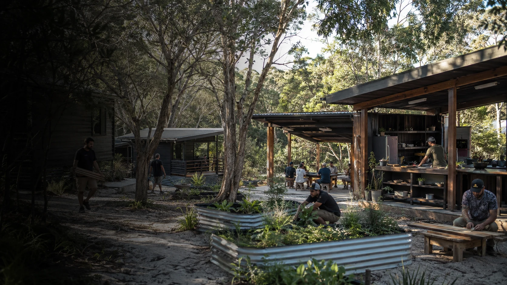

Alcohol and drug free living
A steady daily setting centred on food, sleep, routine and peer support.

Initial local conversations and groundwork have begun around culture, mentoring, routine, food, gardens, useful work and support beyond the stay.
A steady daily setting centred on food, sleep, routine and peer support.
Yarning, mentoring and cultural connection shaped by the relevant men.
Cooking, gardens, maintenance, making and repair provide structure, skills and visible contribution.
Housing, employment, health, family and continuing support form part of the pathway from the beginning.
The camp concept concerns an alcohol and drug free cultural living environment. Detoxification, withdrawal management and clinical treatment sit with health services.